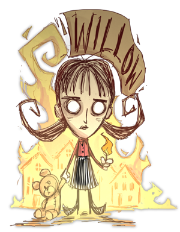

Willow
Due to her lighter (Which she can craft and give to other players.) and her boost of sanity from fire plus her immunity to fire damage willow is the best character for night exploring and cave exploring. (Just dont lose to much sanity or else you will be in for a chilly suprise.) So she can get materials no matter the circumstances.